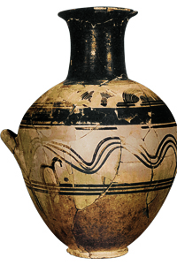

Lezione 3  Il mondo greco
Il mondo greco

-
200
410
-
220
380
-
190
350
-
220
570

ATENE
La produzione di vasi è una delle rare attività artistiche di cui rimane traccia durante il cosiddetto Medioevo ellenico: quest’anfora ateniese in argilla dipinta appartiene allo stile definito “proto geometrico”.PELOPONNESO
I dori occupano per lo più il Peloponneso e la Grecia settentrionale; erano caratterizzati da un’economia piuttosto primitiva e probabilmente non conoscevano la scrittura, tuttavia sono forse loro a introdurre le tecniche di lavorazione del ferro.OLIMPIA
Il 776 a.C. è tramandato come la data dei primi giochi olimpici, che i greci usavano come punto di partenza per il computo degli anni. I santuari come Olimpia e i giochi che vi si svolgevano avranno un’importanza notevole nello sviluppo della cultura ellenica.MILETO
Le colonie fondate in Asia Minore conoscono una grande prosperità ed hanno un ruolo importante nella storia greca; nelle città ioniche di Efeso e Mileto, per esempio, nel VI sec. a.C. nasce la filosofia occidentale.